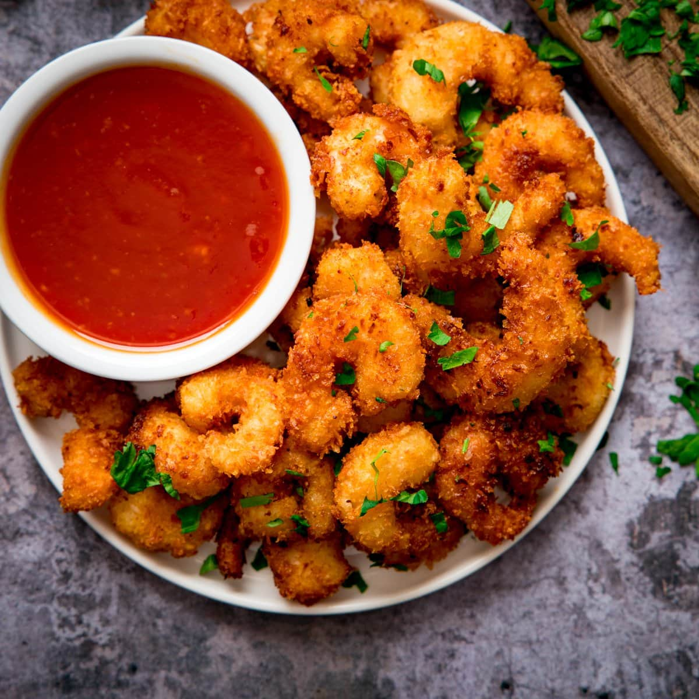

Coconut Shrimp

Description:
The taste sensation of coconut shrimp combines crispiness, sweetness, and the golden flavor of coconut. It's a perfect dish that can be paired flawlessly with a spicy-sweet dipping sauce or completely alone.
Ingredients:
- ¾ cup all-purpose flour, divided
- ⅔ cup beer
- 1 large egg
- 1 ½ teaspoons baking powder
- 2 cups flaked coconut
- 24 medium raw shrimp, shelled, deveined, with tails attached
- 3 cups oil for frying
Directions:
- Line a baking sheet with wax paper; set aside.
- Whisk together 1/2 cup flour, beer, egg, and baking powder in a medium bowl until smooth. Place coconut and remaining 1/4 cup flour in 2 separate bowls.
- One at a time, hold shrimp by the tail and dredge in flour, shaking off excess. Dip in beer batter; allow excess to drip off. Roll in coconut, then place on the prepared baking sheet. Refrigerate for 30 minutes.
- Heat oil in a deep fryer or large skillet to 350 degrees F (175 degrees C).
- Working in batches, fry shrimp in hot oil, turning once, until golden brown, 2 to 3 minutes. Use tongs to remove shrimp to paper towels to drain.